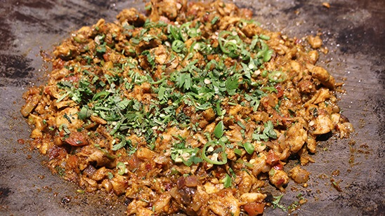

Katakat

Description
Instructions
- Heat the cooking oil in a large, flat-bottomed pan or a griddle over high heat.
- Add cumin seeds and let them sizzle for a few seconds.
- Add sliced onions and sauté until they turn translucent and slightly browned.
- Add the ginger-garlic paste and green chilies. Sauté for another couple of minutes until the raw smell of garlic disappears.
- Add the chopped tomatoes and cook until they soften and the oil starts to separate from the mixture.
- Add the chicken strips, turmeric powder, red chili powder, coriander powder, and salt. Stir-fry the chicken on high heat until it changes color and is mostly cooked through. This should take about 5-7 minutes.
- Sprinkle garam masala over the chicken and continue to stir-fry for another 2-3 minutes until the chicken is fully cooked and well coated with the spices.
- At this point, you can use two spatulas or wooden spoons to chop and mix the chicken and vegetables together vigorously. This chopping motion is what gives Katakat its signature texture. Keep chopping and stirring for a few more minutes until everything is well combined.
- Garnish with fresh coriander leaves and lemon wedges.
- Serve hot with naan or paratha for a delicious and quick Chicken Katakat meal.
Ingredients
- 500 grams boneless chicken
- 1 onion
- 2 tomatoies
- 2-3 green chilies
- 2 tablespoons ginger garlic paste
- 1 teaspoon cumin seeds
- 1 teaspoon red chili powder
- 1 teaspoon turmeric powder
- 1 teaspoon garam masala
- 1 teaspoon coriander powder
- Salt to taste
- Fresg coriander
- 2-3 tablespoons cooking oil
- Lemon wedges